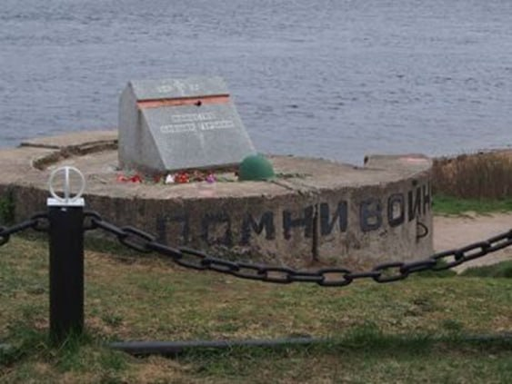

ДОТ (Долговременная огневая точка)
Со времён войны на берегу Невы, где находилась одна из переправ на Невский «пятачок», сохранился ДОТ – долговременная огневая точка, которая также была командирским пунктом. По воспоминаниям очевидцев тех событий, участников обороны Невского «пятачка», командиры переправы менялись каждые несколько дней – они погибали наравне с теми, кто форсировал Неву и сражался на правом берегу. На фото можно увидеть, что ДОТ находится прямо на берегу, а весь берег хорошо простреливался врагами.
